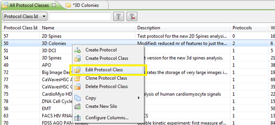
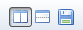

The protocol class editor allows you to change a number of settings related to the protocol class. In particular, this is where you can configure the protocol's features, their normalization, classification, curve fitting, etc.
To open the Protocol Class Editor, right-click on a protocol class and select Edit Protocol Class.

At the bottom of the editor, there are 4 tabs. In each of these tabs, you can edit a particular aspect of the protocol class.
To save your changes to the protocol class, click the Save button in the top-right corner of the editor.
